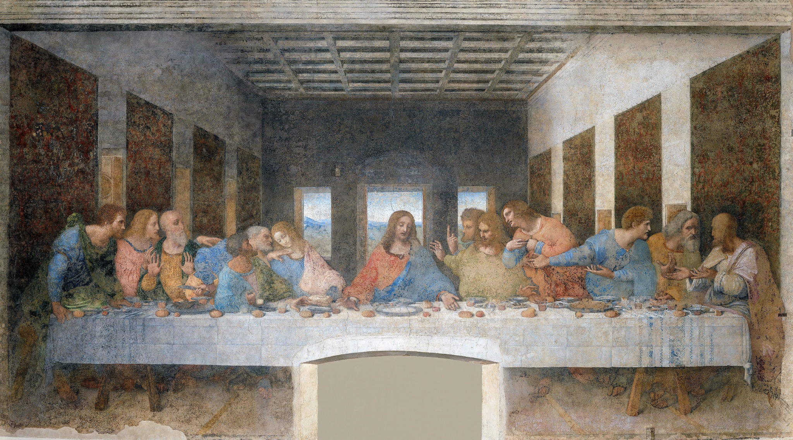

1. Piero della Francesca

Les bords des dalles et de l’architecture orientent le regard vers la scène de la Flagellation. Les lignes rouges prolongent certains bords visibles : leur convergence permet de comprendre la construction de la profondeur.
Apprendre à voir, oser regarder.
Quand l’artiste cherche à comprendre le monde : quinze œuvres pour découvrir comment géométrie, invention, anatomie et observation nourrissent la Renaissance.
Le peintre ne se contente plus de représenter : il construit un espace que l’œil peut parcourir.
La perspective organise deux scènes éloignées, dans une architecture rigoureusement calculée.
Galleria Nazionale delle Marche, Urbino. Image déjà présente sur le site.
Voir la fiche artiste →
L’architecture et ses lignes donnent une place précise à chaque personnage.
Pinacothèque vaticane. Photographie Francesco Bini (Sailko), CC BY-SA 3.0.

Une rue en perspective multiplie les détails et conduit le regard au cœur de la scène.
National Gallery, Londres, NG739. Reproduction indiquée domaine public.
La perspective ne se raconte pas seulement : elle se regarde. Affichez les repères sur chaque œuvre, puis masquez-les pour retrouver le tableau intact.
Les bords des dalles et de l’architecture orientent le regard vers la scène de la Flagellation. Les lignes rouges prolongent certains bords visibles : leur convergence permet de comprendre la construction de la profondeur.
Ici, ce sont surtout les colonnes, les pilastres et les arcs qui ordonnent la scène. Les traits bleus mettent en évidence les verticales de l’architecture, sans prétendre définir un point de fuite unique.
Les bords de la rue, des corniches et des façades guident l’œil vers le fond. Les lignes rouges suivent ces directions visibles : on perçoit comment l’architecture crée un couloir de profondeur.
À observer : ces repères pédagogiques sont indicatifs ; ils soulignent des directions et ne constituent pas une reconstruction géométrique scientifique des tableaux.
Le dessin sert à penser un mécanisme, en révéler les rouages et imaginer son fonctionnement.

La machine devient un objet d’étude : ses pièces sont dessinées pour en comprendre le mouvement.
Musée du Louvre, Codex Vallardi, INV 2341 recto. Attribution à vérifier.

La double coque de la coupole révèle une prouesse d’ingénierie et de construction.
Cathédrale Santa Maria del Fiore. Auteur du schéma non identifié ; ne pas attribuer le dessin à Brunelleschi.
Voir la fiche artiste →
Ressorts et engrenages permettent d’imaginer un véhicule capable d’avancer sans être poussé.
Codex Atlanticus, folio 812 recto, Biblioteca Ambrosiana. Reproduction indiquée domaine public.
Observer le corps, ses muscles et ses proportions transforme la représentation de l’être humain.

Le dessin préparatoire révèle la recherche d’une posture et des tensions musculaires.
Metropolitan Museum of Art, 24.197.2. Open Access, CC0.

Des corps en lutte donnent à voir les muscles, le mouvement et l’anatomie.
Metropolitan Museum of Art, 17.50.99. Reproduction indiquée domaine public.

Un corps inscrit dans un cercle et un carré devient une réflexion sur les proportions.
Gallerie dell’Accademia, Venise. Réutilisation soumise à vérification des règles patrimoniales italiennes.
Un animal, une plante ou un plumage deviennent dignes d’une observation minutieuse.

Les naseaux, les paupières et les mèches de la crinière sont étudiés avec une précision fascinante.
Musée du Louvre. Reproduction publiée dans L’opera completa di Pisanello, Rizzoli, 1966 ; référence d’inventaire à confirmer.

La forme des feuilles et des fleurs révèle une attention nouvelle aux détails du vivant.
Royal Collection, Windsor, RCIN 912424. Image du site existant ; vérifier la correspondance et les droits avant publication.

Le rendu du plumage et du métal transforme une nature morte en expérience d’observation.
Alte Pinakothek, Munich, inv. 5066. Reproduction indiquée domaine public.
Au-delà des formes exactes, les artistes cherchent à rendre visibles les émotions et les pensées.

Les visages rapprochés et les gestes font de la douleur un sentiment partagé.
Pinacothèque de Brera, Milan. Crédit photographique à confirmer.

Un visage, quelques larmes et un regard suffisent à créer une rencontre bouleversante.
Collegio Alberoni, Plaisance. Photographie Michele Castagnetti, CC BY-SA 4.0 (notice exacte à confirmer).

Les gestes des apôtres rendent visible le choc d’une annonce et les réactions de chacun.
Santa Maria delle Grazie, Milan. Photographie Paris Orlando, Wikimedia Commons, domaine public indiqué.
Crédits photographiques : certaines attributions et conditions de réutilisation restent à vérifier avant publication définitive.